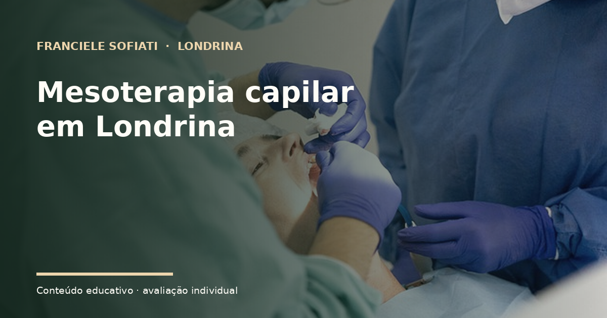
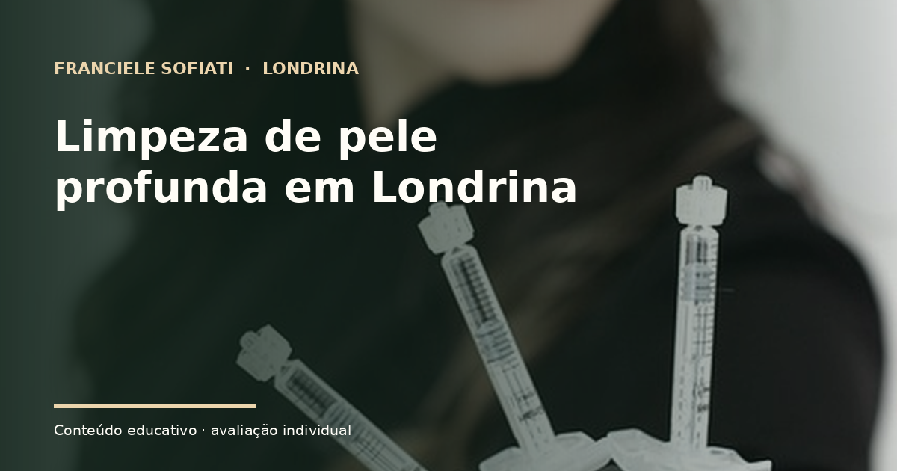

Microdermabrasion and aftercare
Microdermabrasion: what should you report if your skin worsens?
What can be temporary, what deserves a call and which details help the care team.
Read the article →Skin health · Technology · Considered care
Clear perspectives on skin health, aesthetic treatments, prevention, recovery, scalp care and thoughtful planning.
Lead story
Results, aftercare, suitability, safety and natural expression explained from assessment of your own face and movement.
Read the lead essayConsultation & Care
These essays explain why simplifying, observing and assessing carefully can be more useful than immediately adding another treatment or product.
Microdermabrasion and aftercare
What can be temporary, what deserves a call and which details help the care team.
Read the article →
Acne scar evidence
Scar morphology changes the question; the general CO₂ evidence does not establish one protocol for every scar.
Read the article →
Peel evidence
Different diagnoses, formulas and outcomes make the findings difficult to transfer.
Read the article →
Melasma and evidence
Two small trials and a systematic review: what Jessner peel studies for melasma can and cannot establish.
Read the article →Jessner peel
What evidence says about formulas and outcomes—and why a layer count is not a promise.
Read the guide →
Vascular assessment
A 2023 vascular-society consensus advises against routine duplex ultrasound for asymptomatic telangiectasias or reticular veins. Learn what that guidance does and does not establish.
Read the article →PEIM and visible veins
Pregnancy can change the appearance of leg veins. Learn why vascular guidelines do not establish the local PEIM protocol.
Read the article →PEIM and evidence
A Cochrane review and a follow-up study help explain what is known — and what cannot be concluded about local PEIM.
Read the article →PEIM and follow-up
What sclerotherapy studies call pigmentation and matting, and why they do not establish local PEIM outcomes.
Read the article →
Conscious choices
A philosophy of purposeful care: less excess, more clarity, safety and choices that respect your routine.
Read articleConsultation & Care
A good plan begins before a device is chosen: with history, priorities, suitability and realistic expectations.
Read article
Consultation & Care
How to recognise an overwhelmed skin barrier, simplify an overactive routine and restore tolerance before adding actives or procedures.
Read articleConsultation & Care
What careful professional cleansing can clarify, which congestion can be treated safely, and why more pressure never means better care.
Read articleSkin Health
Colour, texture and redness can look deceptively simple. Responsible planning begins by understanding their pattern, history and possible causes.
Skin Health
Pigmentation has patterns, triggers and memory. Understand why colour must be assessed before choosing how—or whether—to treat it.
Read articleClinical notes
Acne scarring and persistent redness both reward precise assessment. A device name alone cannot explain what should happen next.

Skin Health
Acne scars differ in depth, shape and colour. Learn why texture usually needs staged, layered treatment rather than one universal device.
Read article
Laser & Technology
Persistent redness is not one diagnosis. A careful guide to vessels, inflammation, laser and light, and when medical assessment comes first.
Read articleLaser & Technology
Preparation, recovery, treatment intervals and biological timing matter as much as the device itself.
Laser & Technology
An honest account of fractional CO₂ laser: who may suit it, how preparation shapes safety, what recovery involves and why remodelling takes time.
Read article
Laser & Technology
How ultrasound and radiofrequency differ, where gradual collagen support can help, and why neither should be framed as a non-surgical facelift.
Read article
Hair removal and follow-up
Regrowth can have several explanations; learn when to review the plan before repeating.
Read articleHair & Scalp
Hair thinning can be deeply personal. A responsible first step is to understand what is changing and when medical investigation may be needed.
10 · Hair & Scalp
Shedding, thinning and breakage need different answers. A cause-led guide to scalp assessment, referral and realistic procedural support.
Read article
FURTHER READING
The same editorial edition continues here, with direct access to every guide.

Skin health
A practical, considered guide to sun protection that fits real life, including what to assess before choosing professional care in Londrina.
Read the article →Skin health
A practical, considered guide to when an overworked skin barrier needs a pause, including what to assess before choosing professional care in Londrina.
Read the article →Skin health
A practical, considered guide to acids in a skincare routine: order, tolerance and care, including what to assess before choosing professional care in Londrina.
Read the article →Skin health
A practical, considered guide to daily cleansing: removing what is needed, preserving what matters, including what to assess before choosing professional care in Londrina.
Read the article →Skin health
A practical, considered guide to make-up and sensitive skin: what to notice without blaming products, including what to assess before choosing professional care in Londrina.
Read the article →Texture and scars
A practical, considered guide to pores and texture: why there is no permanent ‘closing’ solution, including what to assess before choosing professional care in Londrina.
Read the article →Skin health
A practical, considered guide to blackheads and extraction: when persistence at home can harm the skin, including what to assess before choosing professional care in Londrina.
Read the article →Texture and scars
A practical, considered guide to active acne before texture: why the order of care matters, including what to assess before choosing professional care in Londrina.
Read the article →Texture and scars
A practical, considered guide to post-acne marks and scars: two different skin stories, including what to assess before choosing professional care in Londrina.
Read the article →
Skin health
A practical, considered guide to persistent redness: when to observe and when to investigate, including what to assess before choosing professional care in Londrina.
Read the article →Pigmentation
A practical, considered guide to melasma, heat and light: looking beyond direct sun exposure, including what to assess before choosing professional care in Londrina.
Read the article →Pigmentation
A practical, considered guide to post-inflammatory pigmentation: why the cause belongs in the plan, including what to assess before choosing professional care in Londrina.
Read the article →
Skin health
A practical, considered guide to skin during pregnancy: safer questions before changing a routine, including what to assess before choosing professional care in Londrina.
Read the article →Skin renewal
A practical, considered guide to at-home peels: why concentration without context can be costly, including what to assess before choosing professional care in Londrina.
Read the article →
Skin renewal
A practical, considered guide to physical exfoliation: when feeling the grains stops being renewal, including what to assess before choosing professional care in Londrina.
Read the article →Skin renewal
A practical, considered guide to microdermabrasion: realistic goals for surface renewal, including what to assess before choosing professional care in Londrina.
Read the article →Skin renewal
A practical, considered guide to diamond-tip exfoliation: what to assess before seeking instant effects, including what to assess before choosing professional care in Londrina.
Read the article →
Skin renewal
A practical, considered guide to ultrasonic exfoliation: where it can fit within thoughtful care, including what to assess before choosing professional care in Londrina.
Read the article →Skin renewal
A practical, considered guide to ultrasonic exfoliation: where it can fit within thoughtful care, including what to assess before choosing professional care in Londrina.
Read the article →Skin renewal
A practical, considered guide to retinoic peels: recovery planning starts before application, including what to assess before choosing professional care in Londrina.
Read the article →
Skin renewal
Recovery varies by procedure. Learn what to confirm before restarting active products.
Read the article →Skin renewal
A practical, considered guide to jessner peels: indication and caution before chasing peeling, including what to assess before choosing professional care in Londrina.
Read the article →Laser and technology
A practical, considered guide to laser and tanned skin: why waiting can be the safer choice, including what to assess before choosing professional care in Londrina.
Read the article →Laser and technology
A practical, considered guide to facial laser hair removal: why hormonal context belongs in the conversation, including what to assess before choosing professional care in Londrina.
Read the article →Laser and technology
Body sites have different hair cycles; learn why one universal interval does not fit every area.
Read the article →Laser and recovery
A practical, considered guide to co₂ laser and important events: planning without someone else’s calendar, including what to assess before choosing professional care in Londrina.
Read the article →CO₂ laser
Why evidence for the face, eyelids, and neck does not automatically define the same CO₂ laser plan.
Read the article →Laser and recovery
A practical, considered guide to after co₂ laser: sun protection is recovery, not an afterthought, including what to assess before choosing professional care in Londrina.
Read the article →Texture and scars
A practical, considered guide to laser and acne scars: why a technology name does not decide suitability, including what to assess before choosing professional care in Londrina.
Read the article →Laser and technology
A practical, considered guide to intense pulsed light: why skin, goals and season all matter, including what to assess before choosing professional care in Londrina.
Read the article →Laser and technology
A practical, considered guide to radiofrequency and collagen: why time belongs in the expectation, including what to assess before choosing professional care in Londrina.
Read the article →Laser and technology
A practical, considered guide to ultraformer mpt: clear goals before talking about lifting, including what to assess before choosing professional care in Londrina.
Read the article →
Laser and technology
A practical, considered guide to plasma technology: why assessment and aftercare cannot be shortcuts, including what to assess before choosing professional care in Londrina.
Read the article →Vessels and circulation
A practical, considered guide to visible small vessels: appearance, symptoms and assessment are not the same, including what to assess before choosing professional care in Londrina.
Read the article →Vessels and circulation
A practical, considered guide to peim: information that matters before treating small vessels, including what to assess before choosing professional care in Londrina.
Read the article →
Facial planning
A practical, considered guide to a first botulinum toxin consultation: movement, priorities and limits, including what to assess before choosing professional care in Londrina.
Read the article →Facial planning
A practical, considered guide to botulinum toxin and asymmetry: observation is not a promise of perfection, including what to assess before choosing professional care in Londrina.
Read the article →Botulinum toxin
A considered guide to movement, priorities, temporary effects, and the option to wait.
Read the guide →Botulinum toxin
Understand why aesthetic treatment of facial lines is different from clinical chronic migraine prevention.
Read the guide →
Facial planning
A practical, considered guide to the lower face: a careful conversation about movement and contour, including what to assess before choosing professional care in Londrina.
Read the article →Facial planning
A practical, considered guide to natural-looking facial planning: proportion, not trend, including what to assess before choosing professional care in Londrina.
Read the article →Texture and scars
A practical, considered guide to microneedling and pigmentation: why risk changes the indication, including what to assess before choosing professional care in Londrina.
Read the article →Texture and scars
A practical, considered guide to microneedling with inflamed acne: why a pause may be part of care, including what to assess before choosing professional care in Londrina.
Read the article →Hair and scalp
A practical, considered guide to hair shedding: warning signs before choosing a protocol, including what to assess before choosing professional care in Londrina.
Read the article →Hair and scalp
A practical, considered guide to hair thinning and photographs: documenting change without rushing to conclusions, including what to assess before choosing professional care in Londrina.
Read the article →
Hair and scalp
A practical, considered guide to mmp for the scalp: questions that come before the technique, including what to assess before choosing professional care in Londrina.
Read the article →MMP and hair-loss evidence
MMP, microneedling and injectable therapy studies do not provide interchangeable evidence. Learn how to compare technique, substance and diagnosis.
Read the article →Hair and scalp
A practical, considered guide to scalp mesotherapy: why a protocol is not a universal treatment, including what to assess before choosing professional care in Londrina.
Read the article →Consultation and care
A practical, considered guide to how to prepare for an aesthetic consultation without deciding everything first, including what to assess before choosing professional care in Londrina.
Read the article →Consultation and care
A practical, considered guide to useful questions to ask before an aesthetic procedure, including what to assess before choosing professional care in Londrina.
Read the article →Recovery and safety
A practical, considered guide to after a procedure: signs that call for contact, not online remedies, including what to assess before choosing professional care in Londrina.
Read the article →Recovery and safety
A practical, considered guide to sun exposure and skin recovery: why recent exposure changes more than a tan, including what to assess before choosing professional care in Londrina.
Read the article →Consultation and care
A practical, considered guide to before-and-after photographs: curiosity without turning an image into a promise, including what to assess before choosing professional care in Londrina.
Read the article →Consultation and care
A practical, considered guide to privacy in aesthetic care: why consent remains central, including what to assess before choosing professional care in Londrina.
Read the article →Skin health
A practical, considered guide to a minimal routine for overwhelmed skin: why simplifying can be progress, including what to assess before choosing professional care in Londrina.
Read the article →Consultation and care
A practical, considered guide to biological time and expectations: aesthetic care is not express delivery, including what to assess before choosing professional care in Londrina.
Read the article →Laser and recovery
Ablative and fractional describe different aspects of treatment; neither term alone reveals the protocol.
Read the articleLaser and technology
Hair colour and thickness, skin tone and laser type affect response and the consultation.
Read the articleSkin renewal
Compare the methods, variable depth and questions that help assess each option.
Read the articleFacial planning
Botulinum toxin and dermal fillers are not interchangeable: learn the general difference between movement and volume.
Read the articleSkin and safety
Burning, redness and peeling matter before a procedure. Learn what to share and ask about without trying to diagnose yourself.
Read the articleTechnology and decisions
Focused ultrasound and radiofrequency use different technologies. Learn what to compare and why a device name cannot predict an outcome.
Read the articleLaser hair removal
Irritation after shaving and ingrown hairs can have different causes. Learn how to discuss options without assuming a diagnosis or treatment indication.
Read the articleHair removal choices
Shaving, waxing and laser remove hair in different ways and involve different trade-offs. Compare the basic principles and questions to ask before choosing.
Read the articleCO₂ laser and pigmentation
Pigment changes matter when discussing CO₂ laser. Learn what one review found, where the evidence is limited and what to ask at an assessment.
Read the articleChemical peels and pigmentation
Skin tone and pigmentation history belong in a chemical-peel discussion. Learn about research limits and questions that help assess options without assuming suitability.
Read the articleMicrodermabrasion
Abrasive crystals and diamond-tipped handpieces are different forms of microdermabrasion. Learn the distinction and questions that help compare services without assuming a device or superiority.
Read the articlePeels and laser
Chemical peels and CO₂ laser may be considered for some texture concerns, but they work differently. Learn what a responsible comparison should include.
Read the articleMicroneedling and MMP
Microneedling and MMP can both involve microchannels, but their names alone do not clarify the device, substance delivery or protocol. Learn what to compare.
Read the articleSkin cleansing and acne
Professional cleansing and extraction may address some comedones, but they are not the same as an acne care plan. Learn the limits and when to seek assessment.
Read the articleMicroneedling and safety
Products sold for home use are not necessarily equivalent to professional procedures. Compare purpose, penetration, risks and safety questions.
Read the articlePlasma technology
“Plasma” can refer to different technologies and products. Learn why it matters to confirm the device, intended use and product before comparing treatments.
Read the articleCleansing and technology
Ultrasonic peeling and sonic brushes both appear in cleansing content, but studies of one do not establish the effects of the other. Learn what to compare.
Read the articleLaser hair removal and safety
Tattoos and permanent makeup in a treatment area are important details to disclose. Learn what the evidence can and cannot say and what to ask about the device and area.
Read the articleLaser hair removal and evidence
More hair after laser or light treatment can have different explanations. Learn what research on paradoxical hair growth says—and why it cannot predict your case.
Read the articleUltraformer MPT and assessment
Microfocused ultrasound studies examine different devices and areas. Learn why contour, firmness and volume should be discussed separately before planning treatment.
Read the articleUltraformer MPT and evidence
A study of 30 people evaluated Ultraformer MPT HIFU for under-chin fat over four weeks. Learn what it reported and its limits before applying the evidence to your situation.
Read the articleScalp mesotherapy and evidence
Scalp mesotherapy studies examine different agents and techniques. Learn why the procedure name alone cannot summarize evidence, benefit or risk.
Read the articleScalp mesotherapy and safety
Learn what to ask about an injectable substance, its Brazilian regulatory status and the care explained before a procedure, without assuming which product a clinic uses.
Read the articleVisible veins and assessment
Small surface vessels, enlarged veins and leg symptoms do not always tell the same story. Learn what to notice and when to speak with a vascular professional.
Read the articleVascular assessment and visible veins
Duplex ultrasound can help assess venous flow in selected situations. Learn why it is not an automatic requirement for every visible small vein and cannot define an aesthetic proposal by itself.
Read the articleMicrodermabrasion and scars
Depressed scars, flat marks and raised scars differ. Learn what dermatology guidance says about microdermabrasion and why assessment depends on the type of mark.
Read the articleMicrodermabrasion and preparation
Medicines and scarring history can change the conversation before exfoliation. Learn what to share without stopping medication or applying universal timelines.
Read the articlePigmentation and acne
A flat mark after acne is not necessarily a scar. Learn why color, elevation and texture lead to different questions before considering treatment.
Read the articleMicroneedling and rolling scars
A limited comparative study shows why microneedling and subcision are not interchangeable.
Read the article →Melasma and pigmentation
Melasma and post-inflammatory hyperpigmentation can be confused, but their contexts differ. Learn why identifying the cause matters before discussing a pigmentation protocol.
Read the articleRadiofrequency and technique
Radiofrequency delivered through a surface electrode and RF microneedling are different procedures. Learn the distinction and questions about device, purpose and risk.
Read the articleRadiofrequency and devices
Monopolar and bipolar describe electrode configurations, but do not by themselves define a device’s intensity, outcome or protocol. Learn what to ask.
Read the articleScalp treatment methods
Scalp mesotherapy and MMP are names that do not, by themselves, reveal the technique, substance or goal of a proposal. Learn what to ask before comparing services.
Read the articleLaser hair removal and IPL
At-home IPL devices and professional lasers are not the same technology and do not necessarily share the same indications. Learn what to check before deciding.
Leia o artigo →Chemical peels
The names Jessner and retinoic do not, by themselves, reveal formulation, depth or recovery. Learn how to compare goals and evidence without assuming equivalence.
Leia o artigo →Ultraformer MPT and expectations
Microfocused ultrasound and facelift surgery work in different ways. Learn the limits of comparing them and which questions can align your goal with the option being assessed.
Leia o artigo →Botulinum toxin and safety
Brazil’s health authority warns that serious symptoms may appear hours or weeks after an injection. Learn which signs need immediate medical care and what information to bring.
Leia o artigo →Ultraformer MPT and technology
HIFU describes a category of focused ultrasound; MPT identifies a technology in the Ultraformer line. Learn why the terms do not reveal a protocol or prove an outcome.
Leia o artigo →Skin cleansing and extraction
Blackheads and milia can look like white or dark bumps, but they are not necessarily the same condition. Learn why distinguishing them changes the discussion about extraction.
Leia o artigo →Retinoic peels and skin care
A professional peel and an at-home retinol product are not interchangeable based on their names. Learn what to compare and disclose before a procedure.
Leia o artigo →Retinoic peels and melasma
A Brazilian trial compared specific formulations; read its findings and limits.
Read the article →Plasma technology
Small studies document pigmentation after specific modalities. Learn their limits and what to confirm about the device.
Read the article →Microdermabrasion and rosacea
Active rosacea and fragile vessels change assessment before exfoliation. Learn the cautions and useful questions.
Read the article →Microdermabrasion and dermabrasion
Microdermabrasion is superficial; dermabrasion is a deeper procedure. Compare purpose and recovery.
Read the article →Laser and pregnancy
Reviews find limited evidence for cosmetic hair removal during pregnancy. Understand the caution without confusing uncertainty with proven harm.
Read the article →Laser and electrolysis
Compare pigment, method, sessions and risks; local electrolysis availability is unconfirmed.
Read the article →Laser and pseudofolliculitis
Small studies support a careful discussion, but do not establish the local LightSheer for this condition.
Read the article →Laser and moles
Laser may change how nevi look. Tell the team about lesions in the treatment area and have new or changing spots assessed.
Read the article →LightSheer Duet
Learn what manufacturer documentation describes and why the installed configuration must be confirmed.
Read the article →Skin renewal
Learn why pores may look more visible, what exfoliation may change, and what it cannot promise.
Read the article →Laser and light
Pigmented marks and redness can have different causes. Learn why identifying the target and modality matters before considering laser or light.
Read the article →Botulinum toxin
Before repeating botulinum toxin, organize the dates, indication and product from prior injections. Learn what Brazil’s Anvisa recommends and why intervals depend on product labeling.
Read the article →Scalp and hair
Learn how medical evaluation of hair loss may begin and why blood tests or a biopsy are considered only when the clinical assessment calls for them.
Read the article →Radiofrequency
Learn the difference between a proposed mechanism, a clinical outcome and a promise when reviewing radiofrequency studies for skin firmness.
Read the article →Skin cleansing
There is no universal schedule for professional facial cleansing. Learn how to consider your goal, skin response and when acne calls for a different plan.
Read the article →Vascular health
Sudden swelling in one leg, pain, warmth or redness need medical assessment. Learn when not to wait for an aesthetic appointment.
Read the article →Scalp mesotherapy
A guide to discussing product, evidence, risks, alternatives and follow-up without assuming the clinic’s protocol.
Read the article →MMP and safety
Questions about materials, products, expiry dates and records without assuming the clinic’s protocol.
Read the article →MMP and medication safety
A methotrexate trial and case report show why skin delivery does not prove zero absorption.
Read the article →
Microneedling and pigmentation
Specific studies do not support a universal rule about safety or contraindication. Learn their limits and what to ask during an assessment.
Read the article →Radiofrequency and patient experience
Sensation depends on the device and protocol. Learn what to ask and how to agree on communication during a session.
Read the article →Laser and light technology
A platform may combine different modalities; learn what to confirm about the source, handpiece and goal.
Read the article →Rosacea and light technology
Rosacea, visible vessels and persistent redness raise different questions about light and laser.
Read the article →Peels and acne
Small trials can inform questions, but do not establish local indication or protocol.
Read the article →Botulinum toxin assessment
A checklist for sharing your health history and discussing the specific product, without stopping medicines on your own.
Read the article →Botulinum toxin and evidence
Pregnancy and breastfeeding have different evidence and product labels. Learn why the exact product and purpose matter.
Read the article →Facial planning and safety
A guide to discussing health history, product, indication, risks and follow-up before deciding.
Read the article →Acne scars and treatment comparison
What comparative studies can say about mechanisms, pigmentation and limits.
Read the article →Microneedling and safety
Hygiene, herpes, infection history and products are important questions before assessment.
Read the article →Microneedling and assessment
A guide to discussing medicines, health conditions, allergies and healing without stopping prescribed medicines on your own.
Read the article →Pigmentation and long-term care
Melasma can return; learn why maintenance and follow-up vary by plan.
Read the article →Pigmentation and products
How to check product status and distinguish regulatory category, label claims and individual assessment of a change in skin colour.
Read the article →
A note from Franciele
These articles offer useful context, but they cannot assess your skin or confirm suitability. Bring your questions to a consultation if you would like guidance that reflects your own history and priorities.
Ultraformer MPT and recovery
Questions can help you plan a discussion about sensation and recovery without importing timelines from other devices.
Leia o artigo →Laser hair removal and hair color
Response depends on target pigment and assessment of each area. Learn what to ask before booking sessions.
Read the article →Laser and light technology
Platforms can contain different handpieces and modalities. Learn what to confirm about model, applicator and purpose.
Read the article →Plasma technology
The name plasma can refer to different technologies. Learn why their studies and protocols are not interchangeable.
Read the article →Ultraformer MPT and recovery
The exact plasma type and delivery mode change what can be compared with a CO₂ laser.
Leia o artigo →Plasma technology
The name plasma can refer to different technologies. Learn why their studies and protocols are not interchangeable.
Read the article →Diamond peel and deep cleansing
Surface exfoliation and comedone extraction are different steps. Learn what to ask about each service before choosing.
Read the article →Radiofrequency and safety
The implant type and device model must be confirmed before compatibility can be assessed.
Read the article →Radiofrequency and safety
Plates, prostheses and other implants call for device-specific instructions to be checked.
Read the article →Pigmentation and assessment
A new or changing spot should be assessed before assuming a cosmetic concern.
Read the article →Pigmentation follow-up
How consistent photos can support follow-up, and why an image cannot replace assessment or consent.
Read the article →Melasma and planning
Photoprotection, topical care and procedures play different roles. Learn how to discuss each part of a plan without assuming a protocol.
Read the article →Plasma technology and safety
Check the modality, device model and stated purpose against official records and instructions.
Read the article →Plasma technology and assessment
Assess the lesion and confirm the device and intended use before considering a procedure.
Read the article →Plasma exeresis evidence
A small, uncontrolled study with short follow-up: understand its scope and evidence limits.
Read the article →
Plasma technology
Trial findings, a published correction and the limits of comparing plasma exeresis with cryotherapy.
Read the article →Plasma and recovery
Timing depends on the device and modality. Learn why recovery described for another system cannot define the local protocol.
Read the article →Plasma exeresis and eyelids
See what small studies assessed and why “nonsurgical” does not mean equivalent.
Read the article →Cleansing and technology
Learn how an ultrasonic spatula differs from comedone extraction.
Read the article →Veins and aftercare
Aftercare and follow-up depend on the technique and product; learn what to confirm.
Read the article →Veins and aftercare
Why aesthetic purpose, vascular context, and professional scope need to be clear.
Read the article →Facial planning
Why timelines differ across products, studies and individuals.
Read the article →Laser recovery
What to watch for, when to contact the care team and why aftercare depends on treatment mode.
Read the article →Laser hair removal
A practical consultation checklist; never stop medicines on your own.
Read the article →Ultrasonic peeling
What to share about burning, itching or irritation before assessment.
Read the article →MMP and product safety
A checklist for the product, route, indication and regulatory status.
Read the article →TCA peeling
Understand peel-depth terms and what to confirm about your plan.
Read the article →Facial planning
Compare chemical agents and plans without assuming the local formula or protocol.
Read the article →Chemical peels
Understand peel-depth terms and what to confirm about your plan.
Read the article →Ultrasonic peeling
Questions about reusable items, processing and what should be confirmed for the device.
Read the article →Ultrasonic peeling and pregnancy
There are no spatula-specific studies; confirm the device and speak with prenatal care.
Read the article →Professional deep cleansing
Why these spots may have different causes and what a cleansing appointment can realistically do.
Read the article →Ultraformer MPT
What an immediate analysis in 50 patients measured, and why it cannot predict duration or an individual result.
Read the article →TCA peel and melasma
The trial added TCA to topical medicines and reported mixed outcomes; understand its limits.
Read the article →TCA peels and scars
Focal TCA CROSS and a broader TCA peel are different techniques; see what the studies actually examined.
Read the article →Ultrasonic peeling
Understand the difference between a vibrating spatula and chemexfoliation, and compare the actual proposal.
Read the article →Ultrasonic peeling
Compare different methods and why microdermabrasion studies do not establish results for an ultrasonic spatula.
Read the article →Ultraformer MPT
Antes de considerar ultrassom microfocado, diferencie a preocupação com firmeza da pele, volume e contorno facial; cada uma pede uma avaliação própria.
Leia o artigo →Limpeza de pele profunda
Uma limpeza profissional não precisa extrair toda lesão. Entenda por que avaliação, tipo de lesão e limites de escopo importam.
Leia o artigo →Peeling retinoico
Saiba por que exposição solar recente deve entrar na conversa antes de um peeling, sem transformar orientação geral em prazo universal.
Leia o artigo →Radiofrequência
Entenda por que aparelhos de radiofrequência variam por uso previsto, área e configuração e quais dados confirmar antes de comparar.
Leia o artigo →Plataforma Harmony de laser e luz
Before comparing intense pulsed light and lasers, confirm which modality, handpiece, target and evidence apply to the proposal.
Read the article →Toxina botulínica — terço superior da face
Learn why expression assessment considers more than one area and which questions help define priorities, without injection maps or instructions.
Read the article →Peeling de ATA
Learn why pigment history, peel depth and formula belong in a TCA discussion, without assuming an individual risk.
Read the article →Laser CO₂
Learn why a history of cold sores or outbreaks after procedures should be shared before discussing CO₂ laser resurfacing.
Read the article →Limpeza de pele profunda
Recurring stinging or irritation deserves context before a facial cleansing. Learn what to share without trying to diagnose your skin.
Read the article →Peeling ultrassônico
The service description mentions ultrasonic vibration and a spatula, but does not identify the device, its configuration or the evidence that applies.
Read the article →Diamond peel
The tip name alone does not identify a device model, abrasion level or protocol.
Read the article →Microdermabrasion
Share your history of dark marks after acne or irritation before discussing surface exfoliation.
Read the article →Botulinum toxin
How to describe a change, which product details to bring and which symptoms need emergency care.
Read the article →Platysma toxin and evidence
A phase 3 trial assessed muscle bands during contraction. Learn what its findings do not establish about loose skin or fullness.
Read the article →Microneedling
Learn why the product, intended route and regulatory status need to match the proposed use.
Read the article →Ultrasonic peeling · evidence
What sonophoresis studies show—and why findings cannot automatically be transferred to a cleansing spatula.
Read the article →CO₂ laser · assessment and pigmentation
Phototype, personal history and modality matter; learn what specific studies cannot predict for an individual.
Read the article →Harmony · light and laser preparation
Report recent sun exposure, sunburn and self-tanner; the modality and assessment determine what happens next.
Read the article →Laser/IPL and medical history
Tell the clinic before returning; do not stop medication or assume a universal waiting period.
Read the article →Radiofrequency · follow-up
Photos, clinical scales and personal experience are different measures; see how studies track each one.
Read the article →Radiofrequency
Learn why evidence distinguishes pregnancy from breastfeeding and what to confirm before deciding.
Read the article →Microneedling · recovery
Possible reactions, changes that warrant contact and why aftercare must match the procedure performed.
Read the article →Ultraformer MPT · follow-up
Studies assess different areas and goals at different timepoints; learn why those timelines cannot predict an individual result.
Read the article →Safety · laser and IPL
Why protection must match the light source and device, especially near the eyes.
Read the article →Radiofrequency · dermal filler
Specific studies do not establish a universal interval; learn what to confirm about the product, area, and device.
Read the article →Botulinum toxin · assessment
How to distinguish a movement-related feature from one present at rest, without trying to self-diagnose from photos.
Read the article →PEIM · post-treatment compression
Sclerotherapy trials tested different protocols; learn why they do not automatically set PEIM aftercare.
Read the article →Pigmentation · hydroquinone
What to discuss with a clinician when pigmentation changes during use, and what rare reports cannot establish.
Read the article →Ultraformer MPT · implants
Disclose dental implants and confirm the device instructions, handpiece, and treatment area before deciding.
Read the article →Scalp mesotherapy · follow-up
Density, shedding, photographs, and patient impressions measure different outcomes; learn what to ask at follow-up.
Read the article →Ultraformer MPT · dermal filler
A small abdominal study does not set the interval after facial filler or the clinic’s protocol.
Read the article →Ultraformer MPT · eye area
A small study using corneal shields offers early evidence; learn what to ask about the device, treatment area, and eye safety.
Read the article →Scalp mesotherapy · assessment
Diffuse shedding can be temporary, but its pattern and course help determine when to seek assessment before discussing a procedure.
Read the article →Scalp mesotherapy · evidence
A route-specific review of intradermal studies, without transferring results across diagnoses, formulations or methods.
Read the article →Botulinum toxin · lower face
Smile movement, speech and lip closure belong in a functional assessment before considering a procedure.
Read the article →Radiofrequency · safety
Why a warning about certain RF microneedling uses does not automatically apply to every modality.
Read the article →PEIM · visible vessel assessment
Learn what vascular terms describe and why color or a photo alone cannot determine a proposal.
Read the article →PEIM · laser and light
Compare modalities and assessment questions without assuming PEIM, laser and IPL are equivalent.
Read the article →Plasma technology · pigmentation
What studies of different modalities can tell us, and why they cannot predict risk for a local device.
Read the article →Professional cleansing · home care
Understand the different roles of an appointment, daily care and acne assessment.
Read the article →Radiofrequency · pigmentation
Why studies of microneedling, monopolar radiofrequency and other devices cannot be generalized across modalities.
Read the article →Ultrasonic peeling · preparation
What to share about tretinoin, retinol, acids and irritation without inventing a universal pause interval.
Read the article →Lower face · comparing goals
Compare dynamic and structural concerns without assuming toxin, devices and surgery are equivalent.
Read the article →Plasma aftercare
Aftercare depends on the modality and device. Learn what instructions to confirm with the team.
Read the article →PEIM and safety
Why to share your medicines and never stop one without clinical guidance.
Read the article →
Hair loss assessment
Why diagnosis should come before discussing injectable procedures for hair loss.
Read the article →Ultraformer MPT and safety
How to report changes in sensation or movement and recognize emergency warning signs.
Read the article →
Skin cleansing and medicines
Why the exact cleansing steps and current skin condition matter during treatment.
Read the article →Laser, IPL and safety
Why decorative and cosmetic pigment belongs in assessment of the treatment area.
Read the article →